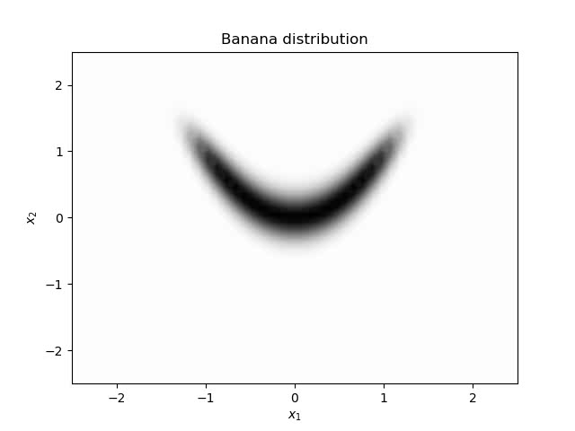
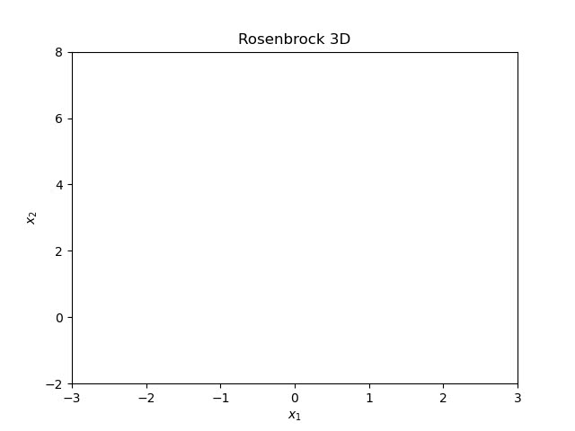
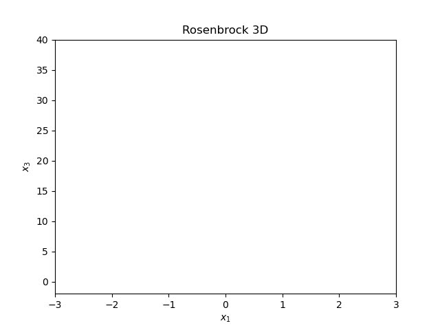
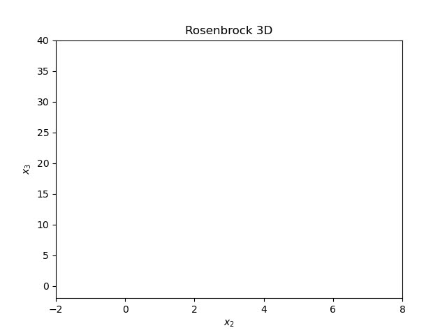
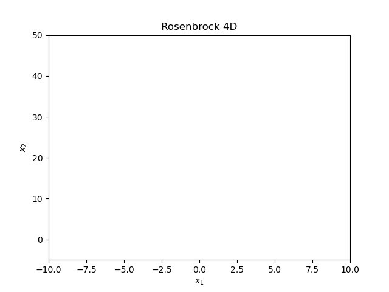
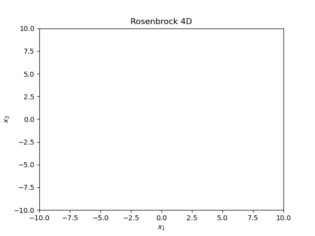

Multivariable examples
Banana distribution
We begin this section presenting the bidimensional distribution called "Banana" (see e.g., [1]), where its name comes from its particular form. This distribution does not have a particular algorithm for sample it in terms of the uniform distribution. Then, we can generate a sample via Random-Walk algorithms.
The density function is given by the expression:
$$\rho(x,y) = C\exp\left(-10(x^{2} - y)^{2} - (y-0.25)^{4} \right),$$
where \(C\) is a proportionality constant of the density function.
Here, we calculate an ensemble \(\lbrace X_{k} \rbrace_{k=1}^{M}\), with the algorithm Wandom-Walk. The covariance matrix of the RW is \(\Gamma = \gamma^{2} I\), where \(\gamma^{2} = 0.001\) and the size of the chain is \(N = 100000\). In the next figures we see the progress of the Markov chain and the multidimensional histogram:

Histograms

Rosenbrock 3D distribution
One of the most common functions used for benchmarking in optimization algorithms is given by the Rosenbrock function. This function does not define a probability density, nevertheless, it can be scaled with a proportionality constant. In the same way as the Banana distribution, the zone with higer probability is narrow and complicated to sample. Here we present a test of Random Walk with a 3D version of the Rosenbrock function (see e.g., [2]).
The density function is given by the next expression:
$$ \rho(x) = C_{3}\exp\lbrace -[100(x_{2} - x_{1}^{2})^{2} + (1 - x_{1})^{2} + 100(x_{3} - x_{2}^{2})^{2} + (1 - x_{2})^{2}]/20 \rbrace $$
where \(C_{3}\) is a proportionality constant. The covariance matrix used for RW is \(\Gamma = \gamma^{2} I\), with \(\gamma^{2} = 0.1\) and an ensemble of size \(N = 1000000\). On the next figures we represent the progress of the chain on different components and and the histograms.
Markov chain



Histograms

Rosenbrock 4D distribution
Now, we present a 4D version of the Rosenbrock density function [2]. Where the density function is given by the next expression:
$$ \rho(x)=C_4 \exp \left\{-\left[\left(x_1-1\right)^2+100\left(x_2-x_1^2\right)^2+\left(x_3-1\right)^2+100\left(x_4-x_3^2\right)^2\right] / 20\right\}, $$
and where \(C_4\) is its corresponding proportionality constant. The simulation is performed via RW with \(\Gamma = \gamma^{2} I\), with \( \gamma^{2} = 0.5 \) and \(N = 1000000\). Here we show the progress of the chain in different components and the multidimensional histograms.
Markov chain



Histograms

Code
Github
Bibliography
[1] Kaipio, J., & Somersalo, E. (2006). Statistical and computational inverse problems (Vol. 160). Springer Science & Business Media.
[2] Pagani, F., Wiegand, M., & Nadarajah, S. (2019). An n-dimensional Rosenbrock distribution for MCMC testing. arXiv preprint arXiv:1903.09556.